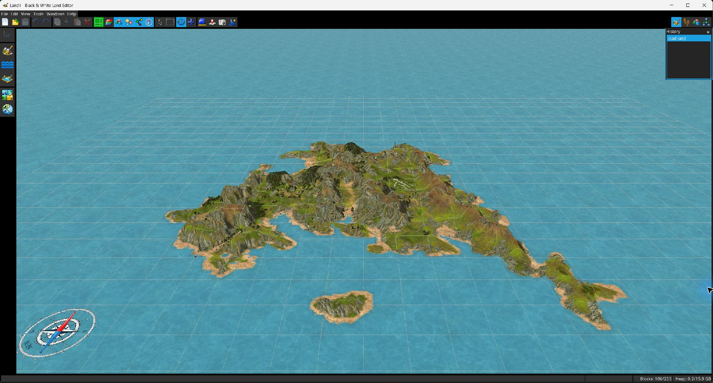
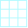
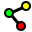
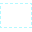
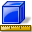
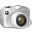
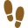
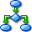

L’écran principal combine une vue 3D centrale, une barre de menus, une barre d’outils générale, une barre spécifique au mode et des fenêtres utilitaires ancrables.

| Bouton | Fonction |
|---|---|
| Nouveau / Ouvrir / Enregistrer | Crée un projet, ouvre un fichier .lnd/.txt ou enregistre tous les composants modifiés du projet. |
| Annuler / Rétablir | Parcourt l’historique des modifications. Le menu et les infobulles incluent la description de la modification courante. |
| Copier / Couper / Coller / Supprimer | Agit sur la sélection actuelle de cellules ou d’objets. Le terrain collé est positionné de manière interactive ; les objets collés sont centrés autour du pivot actuel de la caméra. |
 Grille | Fait défiler l’affichage de la grille : aucune, uniquement sur l’eau, partout. |
| Attributs des cellules | Fait défiler les superpositions de cellules : désactivées, propriétés, sons. |
| Objets | Fait défiler la visibilité des objets : aucun, tous, construits, planifiés. |
| Objets virtuels | Affiche/masque les représentations d’objets auxiliaires ou virtuels. |
 Liens | Affiche/masque les liens de relation entre objets. |
| Boussole | Affiche/masque la boussole 3D. |
| Pointeur | Sélectionne et fait glisser les objets directement dans la vue. |
 Sélection | Sélection polygonale de cellules de terrain ou d’objets selon le mode d’édition actif. |
| Orbite / Déplacement | Outils de navigation de la caméra. |
 Mesurer / Capturer les coordonnées | Mesure la distance entre des points ou lit/prélève une coordonnée du monde. |
 Capture d’écran | Rend la vue 3D dans une image et demande où l’enregistrer. |
| Bouton | Mode | Comportement |
|---|---|---|
| Modifier le terrain | Active la modification du terrain et la barre sculpture/océan/lac/région/son. | |
 | Chemins | Affiche les chemins. Dans le code source fourni, la barre dédiée aux chemins ne contient actuellement aucune commande d’édition. |
| Placement d’objets | Ouvre les panneaux Catalogue et Vue arborescente LHX et rend disponible la fenêtre Propriétés de l’objet. | |
 | Script | Mode orienté script ; la fenêtre Informations sur la caméra s’affiche automatiquement. L’édition du script s’effectue dans la fenêtre Script LHX. |
Un clic sur ouvre quatre opérations de sélection :
| Nouvelle | Remplace la sélection actuelle. |
| Ajouter | Ajoute le contenu du polygone à la sélection. |
| Soustraire | Retire le contenu du polygone de la sélection. |
| Intersection | Conserve uniquement le chevauchement avec la sélection existante. |
La barre d’état affiche les messages contextuels, les coordonnées XYZ du curseur, le nombre de blocs utilisés/maximal et l’utilisation du tas Java. Les fenêtres ancrables comprennent Inspecteur de blocs, Propriétés de l’objet, Catalogue, Vue arborescente LHX, Script LHX, Informations sur la caméra, Historique des modifications et Console.
| Ctrl+N | Nouveau projet | Ctrl+O | Ouvrir |
| Ctrl+S | Enregistrer | Ctrl+Z | Annuler |
| Ctrl+Shift+Z | Rétablir | Suppr | Supprimer la sélection |
| Ctrl+C/X/V | Copier/Couper/Coller | F1 | Guide utilisateur |